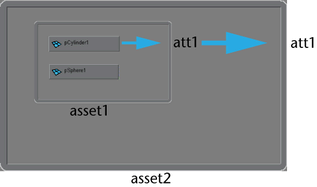

发布属性
封装节点中的属性可以发布到该节点的资产，使这些属性看起来像资产本身的属性。
更改已发布属性或对应的内部节点属性会相应更新这两种属性。
有关已发布属性的详细信息，请参见已发布的属性和节点。
使用通道盒将属性发布到资产
- 选择其中有所要发布属性的封装对象。
- 在“通道盒”(Channel Box)中选择要发布的属性。
- 按住 Ctrl 键并在“通道盒”(Channel Box)中单击鼠标右键，然后从弹出菜单中选择“发布到资产”(Publish to Asset)。
Maya 将在资产上创建已发布名称，然后将其与“通道盒”(Channel Box)中选定的属性绑定。
已发布的属性将显示在“已发布的属性”(Published Attributes)区域的“属性编辑器”(Attribute Editor)中或显示在发布到的资产下“通道盒”(Channel Box)的顶部。
可以使用“资产编辑器”(Asset Editor)或“属性编辑器”(Attribute Editor)发布“通道盒”(Channel Box)中不显示的属性。
使用属性发布属性
- 选择含有要发布属性的封装对象。
- 打开“属性编辑器”(Attribute Editor)。
- 在属性上单击鼠标右键，然后从显示的菜单中选择要发布到的资产。
Maya 会将属性发布到选定的资产。
如果选定的对象存储在资产的层次中，则其上方的所有资产都将显示在菜单中。但是，如果属性也发布到中间级别资产，则这些资产只能发布到较高级别资产。
例如，在下面的情况中，pCylinder1 的 att1 可以发布到 asset2，因为该属性已经发布到 asset1。另一方面，pSphere1 的任何属性都不能发布到 asset2。

使用资产编辑器发布属性
- 打开“资产编辑器”(Asset Editor)。
- 选择要将属性发布到的资产，然后单击“固定资产”图标
 。
。
- 在左侧面板中找到要发布其属性的节点。
- 使用
 展开该节点，查看属性。
展开该节点，查看属性。
- 选择属性名称，然后执行以下操作之一：
- 单击“发布属性”(Publish Attribute)图标
 。
。
- 选择“资产 > 发布属性”(Assets > Publish Attributes) >
 ，将“发布”(Publish)设置为“选定属性”(Selected Attributes)，然后单击“应用并关闭”(Apply and Close)按钮。
，将“发布”(Publish)设置为“选定属性”(Selected Attributes)，然后单击“应用并关闭”(Apply and Close)按钮。
属性将发布到资产。
注： 如果左侧面板中未显示属性，则选择“显示 > 属性(通道)”(Display > Attributes (Channels))。 - 单击“发布属性”(Publish Attribute)图标
使用“发布属性选项”(Publish Attributes Option)窗口可以使用自定义名称发布属性，或者可以发布相关属性集。
发布带有自定义名称的属性或发布相关属性集
- 在“Hypergraph: 连接”(Hypergraph Connections)中，展开其节点中含有要发布属性的资产。
- 选择该节点。
- 选择“资产 > 发布属性”(Assets > Publish Attributes) > 。也可以在“通道盒”(Channel Box)中选择“编辑 > 发布到资产”(Edit > Publish to Asset) > 。
此时将显示“发布属性选项”(Publish Attribute Options)窗口。
- 选择要发布的相关属性。
“选定通道盒属性”(Selected channel box attributes)发布当前在“通道盒”(Channel Box)中亮显的任何属性。
“所有可设置关键帧”(All Keyable)发布可以针对动画设置关键帧的任何属性。
“传入连接”(Incoming connections)发布由其他节点传入值定义的任何属性。
“选定属性”(Selected Attributes)发布任一中选定的任何属性。
- 选择“属性名称”(Attribute Name)命名约定。
- 单击“应用并关闭”(Apply and Close)。
取消发布属性
取消发布属性
- 在“通道盒”(Channel Box)中选择要取消发布的属性。
- 选择“资产 > 取消发布属性”(Assets > Unpublish Attributes)或按 Ctrl 键并在“通道盒”(Channel Box)上单击鼠标右键，然后从弹出菜单中选择“取消从资产发布”(Unpublish from Asset)。
属性已从资产取消发布，且该资产不会再显示在“通道盒”(Channel Box)中资产的名称下。